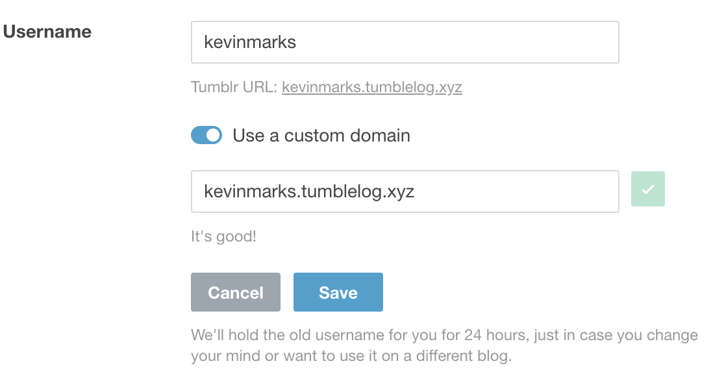

Tumble log like it’s 2005
A domain to delegate your tumblr to so it is no longer under tumblr.com.
This stops the Oath interstital showing up, and I am told it also measn that your flagged content is still available. I haven't verified that - if it works for you, do please tell me.
Take these steps:
- Go to www.tumblr.com/settings/blog

- Click on the pencil to the right of your name
- Change the custom domain to [yourname].tumblelog.xyz

- Click test 
- Click save
- Go to http://[yourname].tumblelog.xyz
Example tumble log: kevinmarks.tumblelog.xyz formerly kevinmarks.tumblr.com
The name "Tumble log" created by Jason Kottke in 2005 Delegating to a domain that you own is a better idea in the long run.